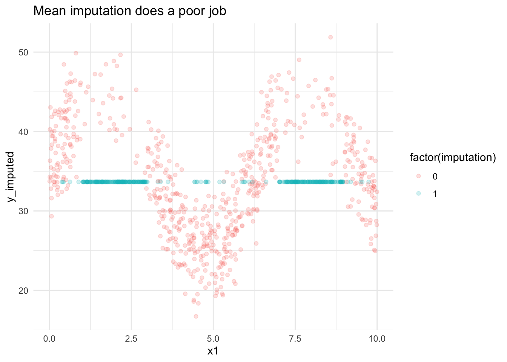
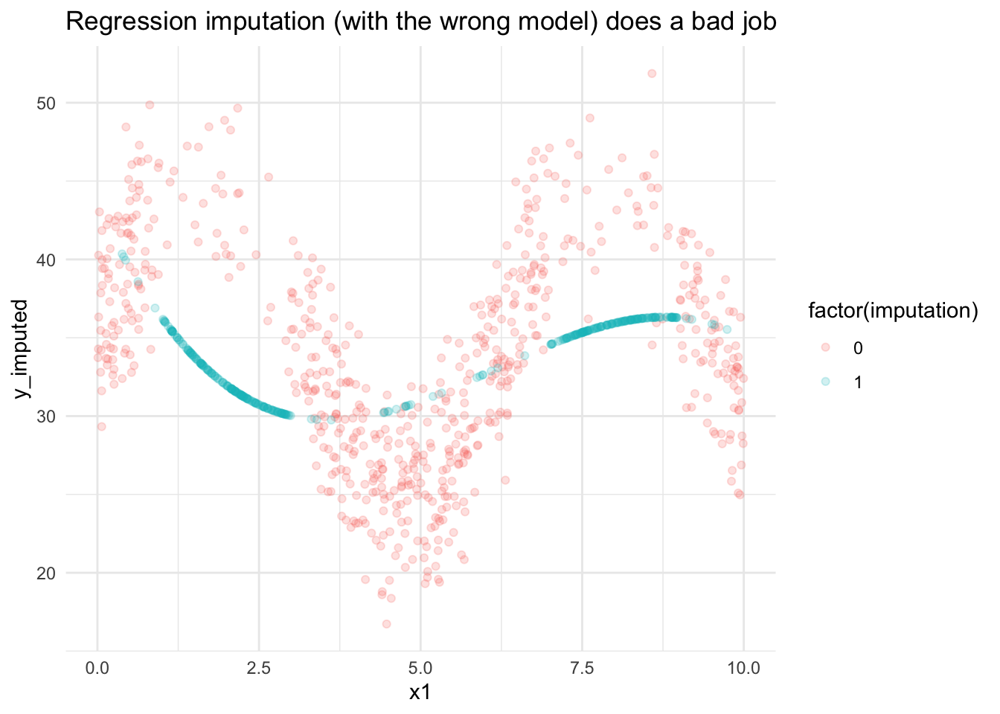
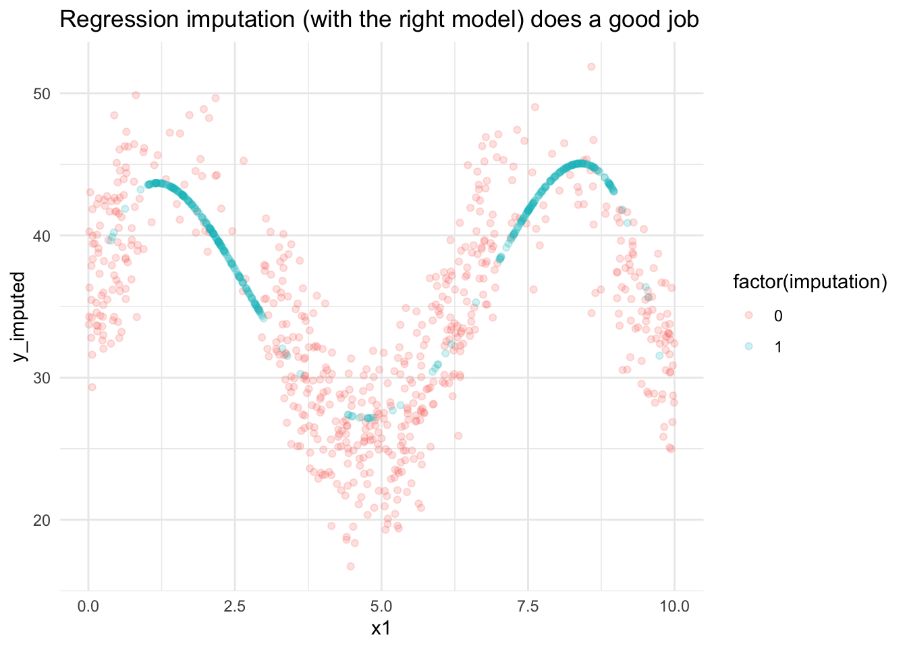
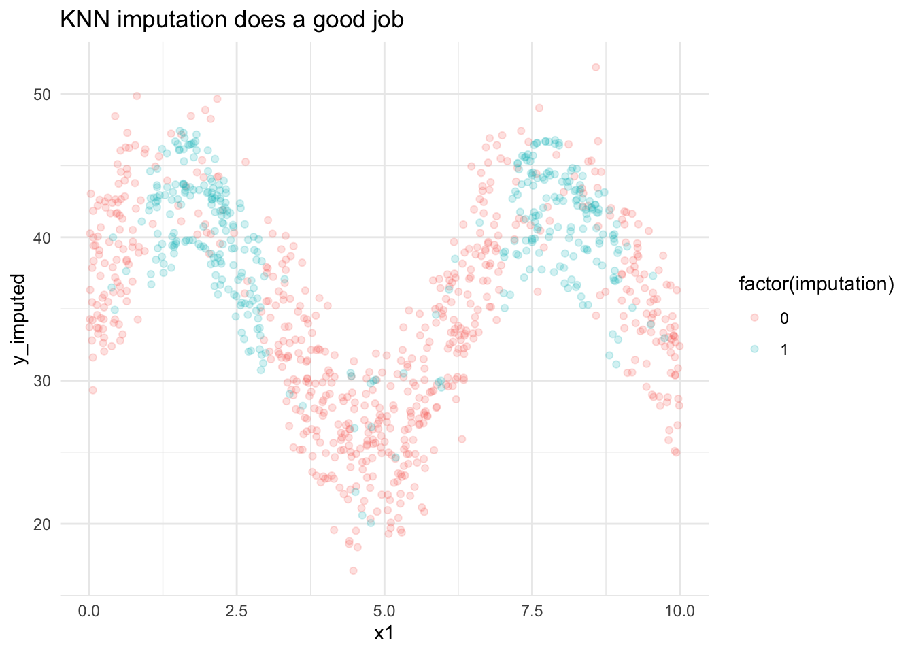
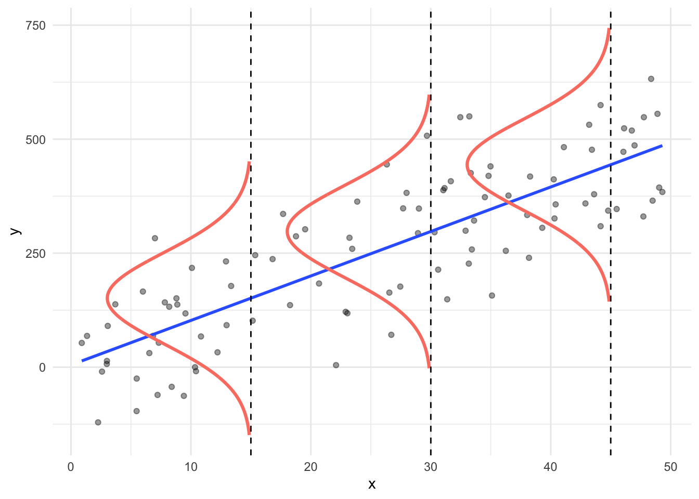

17 Missing Data and Data Imputation
17.1 Types of missingness
Unit missingness: When data are missing for an entire observation or row. For example, a researcher contacts a household but the household never responds to the questionnaire.
# A tibble: 4 × 3
id age income
<chr> <dbl> <dbl>
1 01 22 32000
2 02 32 48000
3 03 NA NA
4 04 48 100000Item missingness: When data are missing for variables within an observation or row. For example, a household responds to a questionnaire but skips a question because they consider it too sensitive.
# A tibble: 4 × 3
id age income
<chr> <dbl> <dbl>
1 01 NA 32000
2 02 32 48000
3 03 16 NA
4 04 48 100000Structural missingness: Item missingness where the values are missing because of data or questionnaire structure. For example, age of first child could be NA for a family without children.
# A tibble: 4 × 3
id number_of_children child_age1
<chr> <dbl> <dbl>
1 01 2 8
2 02 1 10
3 03 0 NA
4 04 1 117.2 Missingness mechanisms
Missing completely at random (MCAR): The missingness does not depend on observed or unobserved data. Ignoring special cases, this means the probability of missingness is the same for all observations.
Missing at random (MAR): The probability of missingness depends only on the observed variables for an observation. For example, respondents don’t report high wealth but the missingness is correlated with high incomes that are reported.
Missing not at random (MNAR): The data are neither MCAR nor MAR. The probability of missingness depends on unobservables. For example, if households don’t report their incomes because they have high incomes and we can’t observe anything else related to the missingness.
There are tests to compare MCAR and MAR. There is no test to compare MAR and MNAR.
Many data sets are simply of poor quality and can’t be fixed, even with the best methods. It is important to understand why data are missing before remediation.
17.3 Three motivations
17.3.1 Missing observations
Missing data are everywhere.
- Households don’t respond to surveys
- Households skip questions in surveys
- Administrative data sources don’t link for every observation because of administrative errors
- Observations are censored (top and bottom coding) or suppressed for reasons of statistical disclosure control
Techniques are needed to handle missing values for most statistical methods. For example, linear regression is not robust to missing values. One NA will break lm().
Appropriate techniques are highly dependent on if the missing values are MCAR, MAR, or MNAR.
17.3.2 Augmenting data
As shown in earlier classes, we can use a small but wide data set to impute new variables on to a long but skinny data set.
One of the authors used Survey of Income and Program Participation, which has detailed wealth variables, to impute wealth on to the American Community Survey, which is large and representative at the city level (Williams, Zhong, and Braga 2023). In this case, everything is MCAR because all observations are missing.
17.3.3 Statistical disclosure control
Many surveys contain detailed information that could plausibly be used to identify respondents. Surveys like the Survey of Consumer Finances (SCF), which is created by the Federal Reserve Board, have variables that are deleted and imputed. These imputed values have the statistical properties of the confidential data but have far lower disclosure risks.
This process typically begins with a “gold standard” standard data set and so all observations are treated as MCAR.
17.4 Methods for missing data
17.4.1 Complete case analysis
List-wise deletion: Analysis where any observation is dropped when it contains a missing value in any variable involved in the analysis. na.rm implements list-wise deletion.
Pairwise deletion: Analysis where any observation is dropped when it contains a missing value in a variable immediately involved in the analysis. For example, if an observation is missing \(X_{i,1}\) but has observed \(X_{i,2}\) and \(X_{i,3}\), then \(X_{i,2}\) and \(X_{i,3}\) will be included in the covariance matrix for implementing linear regression but \(X_{i,1}\) will be dropped.
Reweighting: Methods that adjust observation weights to compensate for missingness or measurement error. For example, many surveys are reweighted/benchmarked against the Decennial Census or American Community Survey to compensate for unit nonresponse.
17.4.2 Imputation (our focus)
Imputation: The process of filling in missing data.
Explicit imputation (full probability models): The predictive distribution used for imputation is based on a full statistical model with explicit assumptions.
Implicit imputation (algorithmic approach): The predictive distribution is based on algorithms with implicit assumptions.
Imputation examples
Consider the simulated data from the supervised machine learning notes.
What if we make about 36 percent of the y values missing and make them missing based on the value of x1?
Mode and mean imputation
Let’s start with a mean imputation approach.
# calculate the mean of the non-missing values
mean_y <- data2 %>%
filter(!is.na(y_missing)) %>%
summarize(y_missing = mean(y_missing)) %>%
pull(y_missing)
# if a value is missing, replace it with the mean from the non-missing values
mean_imputed <- data2 %>%
mutate(
imputation = as.numeric(is.na(y_missing)),
y_imputed = if_else(
condition = is.na(y_missing),
true = mean_y,
false = y_missing
)
)
# visualize the imputation
mean_imputed %>%
ggplot(aes(x1, y_imputed, color = factor(imputation))) +
geom_point(alpha = 0.2) +
labs(title = "Mean imputation does a poor job") +
theme_minimal()
# A tibble: 1 × 2
`mean(y)` `mean(y_imputed)`
<dbl> <dbl>
1 36.7 33.7Mode imputation follows a similar procedure.
Linear and logistic regression imputation
Mean and mode imputation do not leverage the observed information for observations with missing values. Let’s use linear regression with higher-order terms to impute the missing values. Let’s start with a third-degree polynomial. That is the model:
\[y_i = \beta_0 + \beta_1x_{i1} + \beta_2x_{i1}^2 + \beta_3x_{i1}^3 + \epsilon_i\]
data2_complete <- filter(data2, !is.na(y_missing))
data2_missing <- filter(data2, is.na(y_missing))
lm_y_3 <- data2_complete %>%
lm(formula = y_missing ~ poly(x1, degrees = 3, raw = TRUE), data = .)
lm_imputed3 <- bind_rows(
`0` = mutate(data2_complete, y_imputed = y_missing),
`1` = bind_cols(
data2_missing,
y_imputed = predict(lm_y_3, newdata = data2_missing)
),
.id = "imputation"
)
# visualize
lm_imputed3 %>%
ggplot(aes(x1, y_imputed, color = factor(imputation))) +
geom_point(alpha = 0.2) +
labs(title = "Regression imputation (with the wrong model) does a bad job") +
theme_minimal()
# A tibble: 1 × 2
`mean(y)` `mean(y_imputed)`
<dbl> <dbl>
1 36.7 33.7Unfortunately, the results are no better than mean imputation. Let’s try a fourth-degree polynomial. That is the model:
\[y_i = \beta_0 + \beta_1x_{i1} + \beta_2x_{i1}^2 + \beta_3x_{i1}^3 + \beta_4x_{i1}^4 + \epsilon_i\]
lm_y_4 <- data2_complete %>%
lm(formula = y_missing ~ poly(x1, degrees = 4, raw = TRUE), data = .)
lm_imputed4 <- bind_rows(
`0` = mutate(data2_complete, y_imputed = y_missing),
`1` = bind_cols(
data2_missing,
y_imputed = predict(lm_y_4, newdata = data2_missing)
),
.id = "imputation"
)
# visualize
lm_imputed4 %>%
ggplot(aes(x1, y_imputed, color = factor(imputation))) +
geom_point(alpha = 0.2) +
labs(title = "Regression imputation (with the right model) does a good job") +
theme_minimal()
# A tibble: 1 × 2
`mean(y)` `mean(y_imputed)`
<dbl> <dbl>
1 36.7 36.2The results are much better. In general, explicit imputation is better when the model is correct because explicit models offer tools for making probabilistic statements about the imputations. However, getting the right model is always a challenging task.
Logistic regression imputation follows a similar procedure.
Other supervised machine learning imputation
As we will discuss in future chapters, linear and logistic regression are both supervised machine learning algorithms. However, there are many other algorithms too. What if we try a K Nearest Neighbors (KNN) algorithm with k = 13. You can learn more about KNN in Section 19.2.2.
library(tidymodels)
knn_recipe <-
recipe(formula = y ~ ., data = data2_complete) %>%
step_normalize(x1, x2)
# neighbors = 13 comes from the hyperparameter tuning in the supervised machine
# learning notes
knn_mod <-
nearest_neighbor(neighbors = 13) %>%
set_engine(engine = "kknn") %>%
set_mode(mode = "regression")
knn_workflow <-
workflow() %>%
add_model(spec = knn_mod) %>%
add_recipe(recipe = knn_recipe)
knn_fit <- knn_mod %>%
fit(formula = y_missing ~ x1 + x2, data = data2_complete)
# add the imputed values
knn_imputed <- bind_rows(
`0` = mutate(data2_complete, y_imputed = y_missing),
`1` = bind_cols(
data2_missing,
y_imputed = predict(knn_fit, new_data = data2_missing)$.pred
),
.id = "imputation"
)
# visualize
knn_imputed %>%
ggplot(aes(x1, y_imputed, color = factor(imputation))) +
geom_point(alpha = 0.2) +
labs(title = "KNN imputation does a good job") +
theme_minimal()
# A tibble: 1 × 2
`mean(y)` `mean(y_imputed)`
<dbl> <dbl>
1 36.7 36.0The model is pretty good without much work!
Concept: Impute proportions
It is often desirable to impute proportions instead of 0/1 for categorical variables (McCaffey and Elliott, 2008). Converting the probabilities to indicators throws out information and can bias results for small groups.
- Can sum probabilities to counts
- Can average probabilities for proportions
- Can use probabilities as predictors in models
Concept: Stochastic imputation
Mean imputation and conditional mean imputation result in distorted sample variances and covariances, and too few values in the tails of distributions (Little and Rubin, 1990).

It is desirable to draw from posterior predictive distributions (Bayesian) or comparable ideas from frequentist statistics or machine learning. For example, instead of imputing directly with linear regression, add normally distributed random noise to the predicted values from linear regression with mean zero and variance equal to the residual variance on complete cases.
We recommend sampling predicted values from all trees in a random forest model instead of imputing the mean or median of the trees.
Concept: Multiple imputation
Most single imputation methods do not account for imputation uncertainty. A common strategy to account for uncertainty is to repeat the imputation process many times. For example:
- Impute 50 times.
- Estimate the parameter of interest 50 times (for example, population means).
- Average the 50 parameters and calculate a standard error that accounts for the variance of the individual estimates and the variance between the estimates. There are combination rules for these calculations.
This results in valid standard errors for many estimators that account for the uncertainty of imputation.
17.4.3 Analyze incompleteness
- Explicitly model missingness mechanism
- Expectation maximization (same algorithm as K-Means clustering)
- Full information maximum likelihood
- Gibbs’ sampler
17.5 Strategies to avoid/remediate missing data (by Roderick Little)
- Limit respondent burden - Limit the length or difficulty of questionnaires to limit the probability that a respondent will start, but not finish the questionnaire.
- Collect data to predict missing values - Collect basic demographic variables that can be used for reweighting and collect variables that are correlated with variables that will contain missingness.
- Follow up with a subsample of non-respondents - Information about non-respondents is gold for determining the missingness mechanism and imputing missing data.
17.6 Examples
17.6.1 Application 1: Bayesian Improved Surname Geocoding
Self-reported race/ethnicity is the gold standard for the analysis of racial and ethnic disparities. Many important data sets do not contain race or ethnicity but have detailed information that could be used to impute race and ethnicity.
The goal is to make group-level inferences instead of individual inferences.
Bayesian Improved Surname Geocoding (BISG) is an imputation method developed by RAND Corporation for estimating racial and ethnic disparities with imputations. It has been used in numerous applications like measuring racial/ethnic differences in voluntary disenrollment from Medicare plans and many fair lending models.
For each observation in a data set, two sets of probabilities for six race/ethnicity groups are generated:
- Link residential address to Census Block Group information about race and ethnicity.
- Link surname to Census surname list information about race and ethnicity.
- 150,000 surnames that show up 100+ times
- Counts of 6 different race/ethnicity groups
Use Bayes’ theorem to combine residential and surname probabilities.
For each observation, this results in six probabilities for American Indian/Alaskan Native, Asian and Pacific Island, Black, Hispanic, Multiracial, and White. The model generates ROC AUC of 0.93 or greater for large groups like Black, Hispanic, and White but can perform worse for groups like Multiracial.
17.6.2 Application 2: library(tidysynthesis)
Slides and .R script